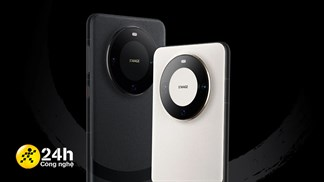
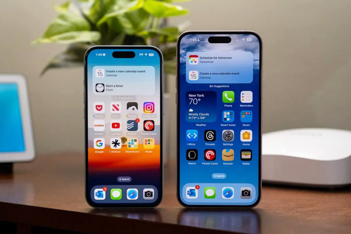
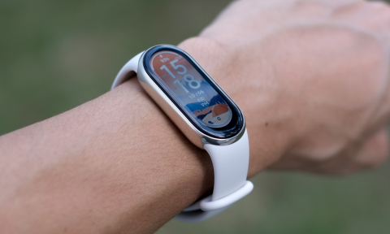
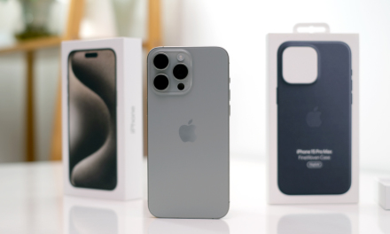

Tin Tức
Giới thiệu
Liên hệ
Trang chủ
Apple từng định mua Bing để đấu với google
Doanh nghiệp 3 giờ

Huawei Mate 70 Pro+ Concept:bo cong sang trọng, snapdragon 8+gen2 mạnh mẽ
thegioididong 9 giờ
Google ra mắt Pixel 8, Pixel 8 Pro và Watch 2 tích hợp sâu AI
vietnamnet 6 giờ
Microsoft dự kiến sẽ ra mắt chip AI để giảm sự phụ thuộc vào Nvidia
thegioididong 9 giờ

iPhone 15 và AI tạo sinh lọt top từ khóa người Việt tìm kiếm nhiều nhất
vietnamnet 13 giờ
MediaTek Dimensity 9300 bị rò rỉ với GPU 12 nhân, sẽ có sức mạnh cực khỏe?
thegioididong 9 giờ

Xiaomi hạ giá Smart Band 8 để 'đấu' hàng xách tay
vnexpress 9 giờ
Rò rỉ trang bị đáng chú ý nhất trên Vivo X100 Pro, hứa hẹn sẽ thay đổi cuộc chơi?
thegioididong 9 giờ

Iphone 15 Pro không giảm hiệu năng sau bản vá lỗi quá nhiệt
vnexpress 6 giờ
Các phiên bản Fan Edition có phải là 'món hời' mà người dùng Samsung cần đến?
thegioididong 9 giờ